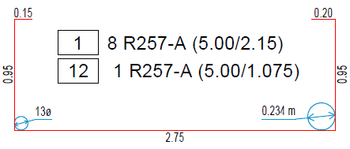

")
Normalerweise werden keine Biegerollendurchmesser angegeben. Wenn vom Standard abweichend andere Biegerollendurchmesser verwendet werden sollen, müssen Sie diese auf dem Bewehrungsplan und in der Biegeliste angeben.
·Damit der richtige Durchmesser gezeichnet werden kann, muss die Form verlegt sein.
·Wenn sich der Stabdurchmesser (Mattentyp) nachträglich ändert, müssen Sie die Biegerollendurchmesser löschen und neu erzeugen. Nutzen Sie dafür [Konst1 | Maßket | lösche].
·Für die Unterstreichung und die Biegerollendarstellung wird der Stift aus dem ersten Maßkettenstil (ID-Nr. 1) in [Konst1 | Maßket | DefMaß | Maßketten | Linien | Gerüst | Stiftnummer] genommen. Der Text entspricht der Darstellung von Teillängentexten [Option | SysDat | Formstahl | Auszug Formmatte | Darstellung | Text Teillänge].
So wird's gemacht:
§Klicken Sie die Ecke an der Auszugsform an, an der das Symbol gezeichnet werden soll. [Welche Ecke].
§Wählen Sie, wie der Biegerollendurchmesser auf dem Plan und in der Biegeliste angegeben werden soll. [Biegerollendurchmesser].
Gibt den Biegerollendurchmesser als Faktor an (Verhältnis vom Biegerollendurchmesser zum Stabdurchmesser). Sie können das Durchmesser-Symbol (Ø) bei der Angabe als Faktor durch eine individuelle Zeichenfolge ersetzen (z. B. ds). [Option | SysDat | Formstahl | Auszug Rundstahl | Konfiguration | Stahlauszug | Zeichen für Biegerollendurchmesser]. |
|
Gibt den Biegerollendurchmesser als Absolutmaß an. In der Liste werden die Absolutmaße entsprechend der Faktoren und dem größten Stabdurchmesser berechnet und angezeigt. (Absolutmaß = Faktor * größter Stabdurchmesser). Die Ausgabeeinheit entspricht der Maßeinheit für Stahlauszüge. [Option | SysDat | Ausgabeeinheiten]. |
§Übernehmen Sie den vorgeschlagenen Wert mit Rechtsklick oder klicken Sie einen Wert in der Liste an. Sie können auch einen Wert eintippen.
§Platzieren Sie den Text per Mausklick an der gewünschten Stelle. [Lage Text].
Der Text wird automatisch unterstrichen und vom Start oder Ende wird die Verbindungslinie zum Durchmesserpfeil gezogen.
Beispiel: Biegerollendurchmesser als Faktor (links) und als Durchmesser mit Maßeinheit (rechts)
 |